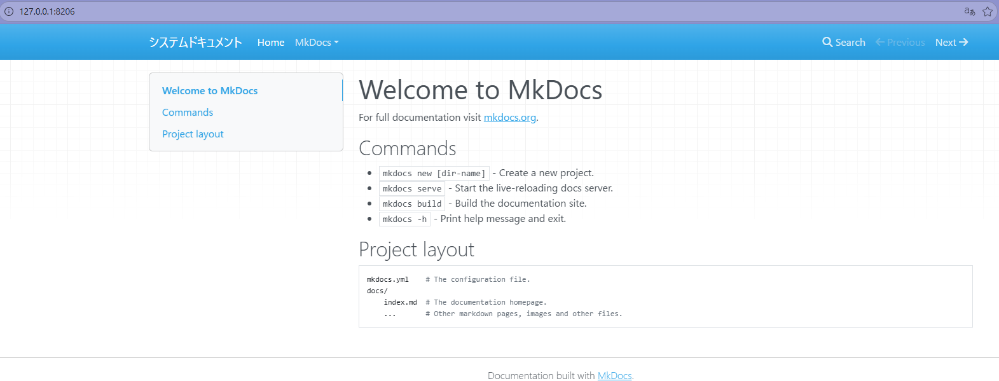

新建项目¶
本次使用的应用程序为mkdocs
MkDocs 简介
MkDocs 是一个专注于技术文档的静态站点生成器，适合用 Markdown 快速生成结构清晰、易维护的文档网站。
- VS Code（编辑器）：负责写和预览 Markdown
- MkDocs（应用程序，集成了 Markdown 处理器）：负责把 Markdown 变成最终的网站
它们是配合关系，不是替代关系。
和 MkDocs 同级的还有 Docusaurus、VuePress 等，都是“用 Markdown 生成文档网站”的主流工具。
MkDocs 的优势：
- 极简配置、上手快
- 对 Markdown 支持稳（基于 Python-Markdown，扩展体系成熟）
- Material for MkDocs 主题体验好
- 不需要前端基础，非常适合个人和团队文档
总结：
VS Code 用来写 Markdown，MkDocs 用来把 Markdown 变成文档网站。MkDocs 的优势是简单、专注文档、稳定。
环境构筑
- 创建新的MkDocs工作文件夹
mkdir [file-name](eg:sysdocs) - 进入MkDocs目录
cd [file-name](eg:sysdocs) - 查看python版本，3.8以上
python --version - 安装 MkDocs
pip install mkdocs mkdocs-material - 新建MkDocs程序
mkdocs new . - 启动测试
mkdocs serve - 打开浏览器，输入
显示页面，环境构筑完毕
http://127.0.0.1:8000/
关闭启动中的端口
- 当关闭测试页面时，后台程序并不会自动关闭测试端口，此时如果再次启动测试
mkdocs serve的话，会显示端口冲突错误
所以此时需要手动关闭后台端口
1. 查找占用端口的进程
lsof -i :[端口地址](eg:8000)
kill [启动中的进程码](eg:45631)
修改端口地址
- 可以不使用127.0.0.1:8000，因为大多数程序启动时，都会默认使用8000终端，
所以手动改写为其他地址，以预防终端地址冲突(端口地址小于 1024 的需要 root 权限，尽量使用8000＋端口)mkdocs serve -a 127.0.0.1:[地址](eg:8206)